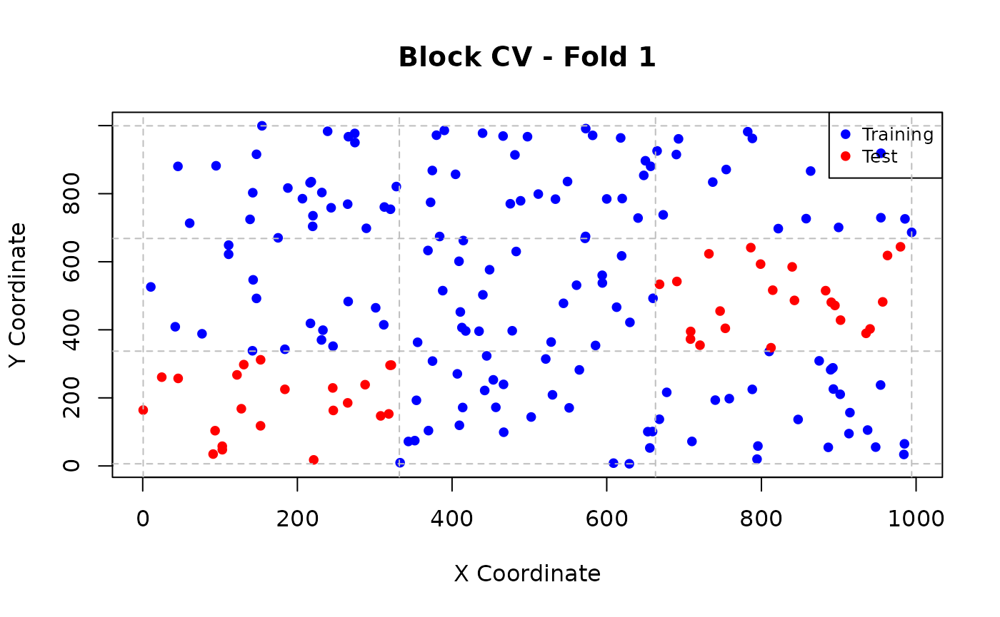
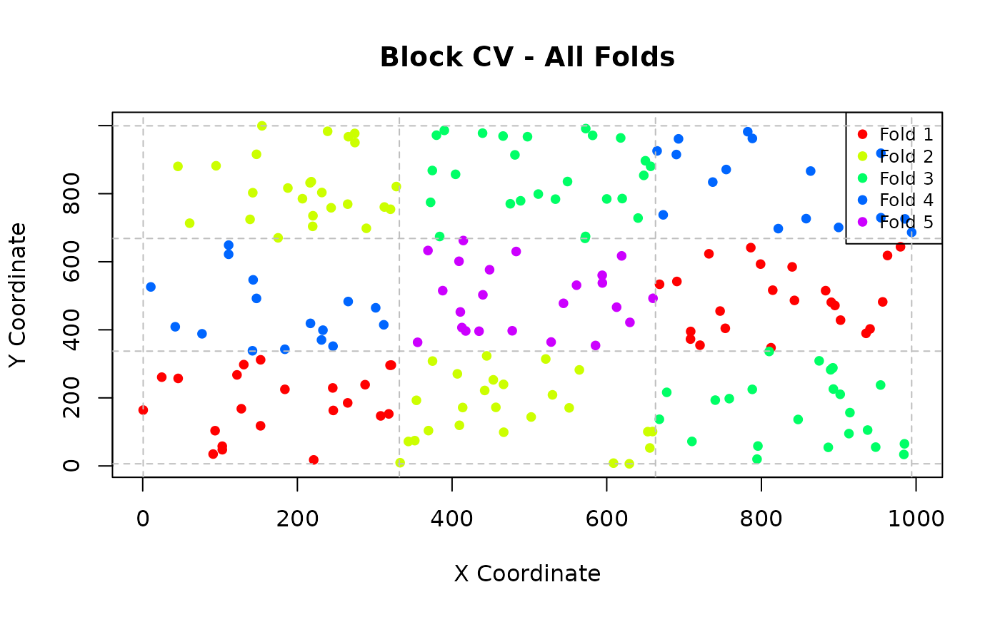

Spatial Cross-Validation Methods
Mamadou SOW
2026-09-15
Source:vignettes/spatial-cross-validation.Rmd
spatial-cross-validation.RmdOverview
This vignette demonstrates the different spatial cross-validation
methods available in spatialcvR and when to use each
approach.
Available Methods
spatialcvR implements four main spatial cross-validation
methods:
- Spatial Block CV: Divide space into rectangular blocks
- Buffered CV: Exclude training observations within a buffer radius
- Spatial Clustering CV: Group observations spatially using clustering
- Random Split: Baseline random CV for comparison
Setup
library(spatialcvR)
# Load sample data
data(sample_spatial_data)
head(sample_spatial_data)## id longitude latitude variable1 variable2 target
## 1 1 287.5775 238.7260 86.36698 36.57333 110.40061
## 2 2 788.3051 962.3589 102.53939 49.52156 143.78578
## 3 3 408.9769 601.3657 67.79740 42.96299 101.66984
## 4 4 883.0174 515.0297 99.58281 45.22016 123.82676
## 5 5 940.4673 402.5733 92.87996 47.44277 129.43342
## 6 6 45.5565 880.2465 47.51536 43.20302 86.62062Spatial Block Cross-Validation
Concept
Spatial block CV divides the study area into a grid of rectangular blocks. Observations are assigned to folds based on which block they fall into. This ensures spatial separation between training and test sets.
When to Use
- Data with relatively uniform spatial distribution
- When you want to ensure geographic coverage
- When computational efficiency is important
- As a default spatial CV method
Basic Usage
# Create spatial block folds
folds_block <- spatial_folds(
data = sample_spatial_data,
x = "longitude",
y = "latitude",
k = 5,
method = "block",
seed = 123
)
print(folds_block)## Spatial Cross-Validation Folds
## ==============================
## Method: spatial_block
## Number of folds: 5
## Observations: 200
## CRS: Not defined
## Has duplicate coordinates: FALSE
## Seed: 123
##
## Fold sizes:
## Fold 1: 155 train, 45 test
## Fold 2: 150 train, 50 test
## Fold 3: 150 train, 50 test
## Fold 4: 168 train, 32 test
## Fold 5: 177 train, 23 testControlling Block Size
You can control the spatial resolution using either block size or number of blocks:
# Specify block size
folds_block_size <- spatial_block_folds(
data = sample_spatial_data,
x = "longitude",
y = "latitude",
k = 5,
block_size = c(200, 200), # 200x200 unit blocks
seed = 123
)
# Specify number of blocks
folds_n_blocks <- spatial_block_folds(
data = sample_spatial_data,
x = "longitude",
y = "latitude",
k = 5,
n_blocks = c(5, 5), # 5x5 grid
seed = 123
)Assignment Strategies
Blocks can be assigned to folds using different strategies:
# Systematic assignment (default)
folds_systematic <- spatial_block_folds(
data = sample_spatial_data,
x = "longitude",
y = "latitude",
k = 5,
assignment = "systematic",
seed = 123
)
# Random assignment
folds_random_assign <- spatial_block_folds(
data = sample_spatial_data,
x = "longitude",
y = "latitude",
k = 5,
assignment = "random",
seed = 123
)Buffered Cross-Validation
Concept
Buffered CV ensures that for each test observation, no training observation falls within a specified buffer radius. This provides strict control over the minimum spatial separation.
When to Use
- When you need precise control over train/test distance
- For point-based data with irregular sampling
- When buffer distance has ecological/physical meaning
- For conservative performance estimates
Basic Usage
# Create buffered folds
folds_buffer <- spatial_buffer_folds(
data = sample_spatial_data,
x = "longitude",
y = "latitude",
k = 5,
buffer_radius = 100, # 100 unit buffer
seed = 123
)
print(folds_buffer)## Spatial Cross-Validation Folds
## ==============================
## Method: spatial_buffer
## Number of folds: 5
## Observations:
## CRS:
## Has duplicate coordinates:
##
## Fold sizes:
## Fold 1: 160 train, 40 test
## Fold 2: 160 train, 40 test
## Fold 3: 160 train, 40 test
## Fold 4: 160 train, 40 test
## Fold 5: 160 train, 40 testSpatial Clustering Cross-Validation
Concept
Spatial clustering CV groups spatially proximate observations using clustering algorithms (k-means), then assigns clusters to folds. This is useful for data with complex spatial structure.
When to Use
- Data with irregular or clustered spatial patterns
- When natural spatial groupings exist
- For heterogeneous spatial distributions
- When block boundaries would be arbitrary
Basic Usage
# Create clustering folds
folds_cluster <- spatial_cluster_folds(
data = sample_spatial_data,
x = "longitude",
y = "latitude",
k = 5,
n_clusters = 10, # Number of spatial clusters
seed = 123
)
print(folds_cluster)## Spatial Cross-Validation Folds
## ==============================
## Method: spatial_cluster
## Number of folds: 5
## Observations:
## CRS:
## Has duplicate coordinates:
##
## Fold sizes:
## Fold 1: 143 train, 57 test
## Fold 2: 173 train, 27 test
## Fold 3: 161 train, 39 test
## Fold 4: 158 train, 42 test
## Fold 5: 165 train, 35 testUnderstanding Cluster Assignment
# Examine cluster centers
folds_cluster$parameters$cluster_centers## x_coords y_coords
## 1 532.7197 565.9710
## 2 887.9961 696.9285
## 3 434.2980 318.7487
## 4 233.6940 125.0067
## 5 148.7116 397.2902
## 6 608.2099 878.5329
## 7 843.4232 400.2357
## 8 886.7498 125.1667
## 9 619.4220 116.1783
## 10 235.5819 827.2978Random Spatial Split (Baseline)
Concept
Random spatial split performs standard random k-fold cross-validation without spatial constraints. This serves as a baseline to demonstrate the impact of spatial dependence.
When to Use
- As a baseline for comparison
- When spatial dependence is minimal
- For initial exploratory analysis
- To demonstrate the value of spatial CV
Basic Usage
# Create random folds
folds_random <- spatial_split(
data = sample_spatial_data,
x = "longitude",
y = "latitude",
k = 5,
seed = 123
)
print(folds_random)## Spatial Cross-Validation Folds
## ==============================
## Method: random
## Number of folds: 5
## Observations:
## CRS:
## Has duplicate coordinates:
##
## Fold sizes:
## Fold 1: 160 train, 40 test
## Fold 2: 160 train, 40 test
## Fold 3: 160 train, 40 test
## Fold 4: 160 train, 40 test
## Fold 5: 160 train, 40 testChoosing the Right Method
Decision Flowchart
- Start with spatial block CV - Good default choice
- Need precise distance control? → Use buffered CV
- Complex spatial patterns? → Use clustering CV
- Compare with random CV → Always include baseline
Method Comparison
| Method | Pros | Cons | Best For |
|---|---|---|---|
| Block CV | Fast, intuitive, geographic coverage | May split natural clusters | Most cases |
| Buffered CV | Precise distance control | Computationally intensive | Point data, strict requirements |
| Clustering CV | Handles complex patterns | Sensitive to cluster parameters | Heterogeneous data |
| Random CV | Fast, baseline | No spatial control | Comparison, minimal spatial dependence |
Visualizing Folds
# Plot individual fold
plot_spatial_folds(folds_block, sample_spatial_data, "longitude", "latitude",
fold = 1, main = "Block CV - Fold 1")
# Plot all folds
plot_spatial_folds(folds_block, sample_spatial_data, "longitude", "latitude",
fold = "all", main = "Block CV - All Folds")
Practical Tips
Start Simple
Begin with spatial block CV using default parameters:
# Default spatial block CV
folds_default <- spatial_folds(
data = sample_spatial_data,
x = "longitude",
y = "latitude",
k = 5
)Adjust Based on Data Characteristics
- Dense data: Use larger blocks or more clusters
- Sparse data: Use smaller blocks or fewer clusters
- Strong spatial patterns: Consider clustering CV
- Precise distance requirements: Use buffered CV
Always Compare with Random CV
# Compare spatial vs random
folds_spatial <- spatial_folds(sample_spatial_data, "longitude", "latitude",
k = 5, method = "block", seed = 123)
folds_random <- spatial_folds(sample_spatial_data, "longitude", "latitude",
k = 5, method = "random", seed = 123)
# Analyze spatial leakage for both
leakage_spatial <- detect_spatial_leakage(sample_spatial_data, folds_spatial,
"longitude", "latitude")
leakage_random <- detect_spatial_leakage(sample_spatial_data, folds_random,
"longitude", "latitude")
print(leakage_spatial)## Spatial Leakage Detection
## =========================
## Method: spatial_block
## Overall Risk Level: LOW
## Distance Threshold: 53.04
##
## Summary Statistics:
## Min distance: 11.24
## Mean distance: 521.24
## Median distance: 530.91
## Proportion below threshold: 0.1%
##
## Fold Analysis:
## Fold 1: LOW risk (0.1% below threshold)
## Fold 2: LOW risk (0.0% below threshold)
## Fold 3: LOW risk (0.1% below threshold)
## Fold 4: LOW risk (0.2% below threshold)
## Fold 5: LOW risk (0.1% below threshold)
##
## Recommendations:
## - Spatial separation appears adequate.
## - Current cross-validation setup should provide reliable performance estimates.
## - Consider increasing spatial separation if you need more conservative estimates.
print(leakage_random)## Spatial Leakage Detection
## =========================
## Method: random
## Overall Risk Level: LOW
## Distance Threshold: 51.27
##
## Summary Statistics:
## Min distance: 2.21
## Mean distance: 512.67
## Median distance: 504.43
## Proportion below threshold: 0.8%
##
## Fold Analysis:
## Fold 1: LOW risk (0.7% below threshold)
## Fold 2: LOW risk (0.8% below threshold)
## Fold 3: LOW risk (0.8% below threshold)
## Fold 4: LOW risk (0.7% below threshold)
## Fold 5: LOW risk (0.8% below threshold)
##
## Recommendations:
## - Spatial separation appears adequate.
## - Current cross-validation setup should provide reliable performance estimates.
## - Consider increasing spatial separation if you need more conservative estimates.Common Issues and Solutions
Issue: Too few observations per fold
Solution: Reduce k or use fewer blocks/clusters
# Reduce number of folds
folds_k3 <- spatial_folds(sample_spatial_data, "longitude", "latitude", k = 3)Next Steps
- Learn about spatial leakage detection
- Explore model evaluation and comparison